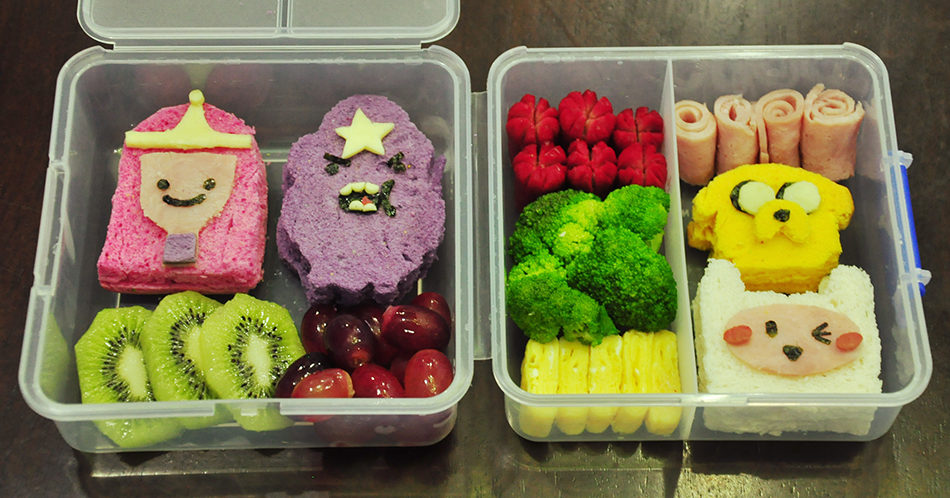
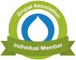

Exploring D8 Development
Training Day
Nick Selvaggio | Mai Irie | Nicole D'Amico | Ho-Ling Poon | Matt Holford | Rebecca Bronheim |
A little about us.
Hi! I'm Nick.
I'm a Managing Partner @
Hi! I'm Mai. I'm a senior developer @
Hi! I'm Ho-Ling. I'm an Applications Developer @
Hi! I'm Matt.
I'm the CTO @
Hi! I'm Rebecca.
I'm an Account Manager for Digital & Creative Services @

Thank you to Do Something for Hosting!
Thank you to TEKsystems for food and beverages!
About Drupal NYC
Join the local community!
Next Meetup is Wed, May 4th
Try Drupal
Also there's a great podcast series: Talking Drupal Podcast
A little about you.
What are we doing today?
- Quick Overview of D8 Landscape
- Tips on Tools
- Pair up and setup!
- Break for lunch @ 12:30 (provided by TEKsystems)
- Create a module with a custom block and more! (thanks @tedbow for role_notices module!)
Let's talk about Drupal 8
Where have we come from?
Our many stages of evolution

Who using Drupal 8 now?
Memorial Sloan Kettering Cancer Center (MSK)
One of the largest cancer centers in the United States, launched the new mskcc.org in May. It chose Drupal 8, even when the software was still in its beta phase, to help extend the reach of its "More Science. Less Fear" campaign.
Johnson & Johnson
Partnered with IBM, Apple and Medtronic to launch Care Advantage, a personal concierge service to prepare patients for knee surgery and to help them deal with its after effects.
CH2M
CH2M is a global corporation that works to keep governments, infrastructure, and environments sustainable. It uses Drupal 8 to present and prove its capabilities.
Many, Many, Many More
Tips on Tools
- You will need a robust IDE (PHPStorm, Eclipse, Netbeans)
- Install and setup XDebug with your IDE
- Drupal Console
- Get acquainted with the Web Profiler module packaged with Devel
Lets dive in!

Find a partner
We will be pair programming today!
Play Along!
StackStarter.io/spin
Spin Code: #trainingday
Under the hood
We can do alot with just core. Let's see how we can extend.

File Structure
Settings.php and friends
Make our lives easier with Drush
What about Drupal Console?
Lunch time!
Let's build our first module together!
Today we covered:
- Learned about the history of Drupal
- Reviewed some helpful tools for D8 Development
- Took a look at Drupal 8 project structure
- Learned about YAML, Routing, Controllers, Plugins, Services, & OOP in Drupal
- Created our first module!
Support Drupal & community events like this
- https://assoc.drupal.org/
- Learn about the Drupal Association's monthly newsletter
- Follow them on @DrupalAssoc
- Attend an Open Board Meeting
Drupal Association Member Benefits

- Listed in public directories
- Receive discounts from DA partners like O'Reilly, Drupal Watchdog, and BuildAModule
- Membership Badge on your Drupal user profile
- Receive the latest news on Drupal Association projects.
Please fill out this survey!
Thanks again to: